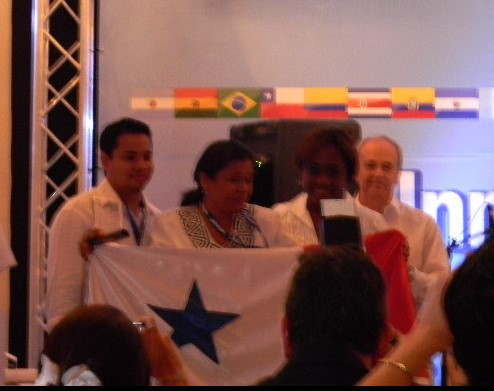

Jorge Polanco
Apasionado por el aprendizaje continuo y el desarrollo personal, he construido una sólida carrera profesional gracias a mi interés desde joven por el conocimiento y las herramientas tecnológicas. Mi enfoque en la excelencia y la innovación me ha permitido destacar en diversas áreas, adaptándome a los desafíos de un mundo en constante cambio. Más allá del ámbito laboral, valoro el tiempo en familia, disfruto de actividades al aire libre como el baloncesto y encuentro satisfacción al contribuir al bienestar de mi comunidad.
Perfil Profesional
Profesional altamente capacitado en tecnología y gestión, con una sólida formación y vasta experiencia en proyectos que combinan innovación y estrategia. A lo largo de su carrera, ha implementado soluciones efectivas para optimizar procesos y mejorar resultados organizacionales. Con un enfoque orientado a la creación de valor a través de la tecnología, lidera equipos multidisciplinarios hacia el logro de objetivos comunes. Su ética, liderazgo y habilidades de comunicación son pilares fundamentales que promueven relaciones colaborativas y productivas en cada proyecto que emprende.
Soporte Técnico
Más de 25 años brindando soluciones técnicas en sistemas operativos, redes y diseño web.
Creación de Contenidos
12 años de experiencia integrando tecnologías innovadoras en entornos educativos.
Cámaras de Seguridad
2 años en instalación y configuración de sistemas de videovigilancia.
Formación
cuenta con una sólida formación académica que respalda su desempeño profesional y personal. Su trayectoria educativa está marcada por una combinación de estudios formales y aprendizaje continuo en áreas clave como la tecnología, la gestión de proyectos y el desarrollo personal. Durante su formación, adquirió conocimientos esenciales que le han permitido entender y resolver problemas complejos, aplicar soluciones tecnológicas innovadoras y gestionar equipos de manera efectiva. Además, complementa su educación formal con certificaciones especializadas y cursos actualizados que fortalecen sus competencias y lo mantienen al día con las tendencias del sector. Su dedicación al aprendizaje continuo refleja su compromiso con la excelencia y su capacidad para adaptarse a los retos de un entorno en constante cambio.
Maestría en Gestión de Entornos Virtuales
Posgrado en Diseños de Aulas Virtuales
Diseño de Aulas Virtuales
Técnico Superior
Consultoría de Tecnología Educativa
Técnico Superior
Tecnología Educativa con énfasis en Informática Educativa
Licenciatura
Informática Empresarial
Técnico
Programación y Estadística Empresarial
Habilidades
combina experiencia técnica y habilidades interpersonales, destacando en gestión de proyectos, análisis de datos y soluciones personalizadas. Su liderazgo, comunicación efectiva y enfoque colaborativo lo convierten en un recurso clave para cualquier organización. Su mentalidad creativa y práctica le permite abordar desafíos con innovación y eficacia.
Programación
Lenguajes y herramientas de programación.
Diseño Responsivo
Pruebas y depuración entre navegadores.
Actualización de Sistemas
Asiste en la actualización de software y hardware para asegurar que los sistemas estén al día con las últimas tecnologías.
Asistencia en la Configuración
Ayuda a los usuarios a configurar dispositivos y software, incluyendo computadoras, impresoras y redes.
Resolución de Problemas
Diagnostica y soluciona problemas técnicos, como fallos de hardware, errores de software y problemas de conectividad.
Mantenimiento Preventivo
Realiza chequeos y actualizaciones regulares para prevenir problemas futuros y asegurar el buen funcionamiento de los sistemas.
Capacitación de Usuarios
Ofrece formación y recursos para que los usuarios comprendan mejor sus dispositivos y software.
Gestión de Incidencias
Registra y sigue el progreso de las solicitudes de soporte hasta su resolución.
Instalación de Software
Ayuda en la instalación y configuración de software necesario para el funcionamiento de dispositivos y aplicaciones.
Seguridad Informática
Proporciona orientación sobre prácticas seguras y ayuda en la implementación de medidas de seguridad.
Soporte Remoto
Utiliza herramientas de acceso remoto para resolver problemas sin necesidad de desplazarse físicamente.
Documentación
Crea y mantiene documentación técnica y manuales de usuario para facilitar el uso de tecnología.
Logros
ha liderado proyectos tecnológicos innovadores que han optimizado procesos y mejorado la productividad organizacional. Su planificación estratégica y liderazgo han garantizado el cumplimiento de objetivos ambiciosos, mientras fomenta entornos de colaboración y aprendizaje continuo. Además, su dedicación al crecimiento profesional se refleja en certificaciones especializadas y reconocimientos por su desempeño sobresaliente.
Agosto 2020
Desempeñé un papel crucial en la adaptación de métodos de enseñanza a un entorno virtual, capacitando a más de 900 docentes en Microsoft Teams y Office 365, desarrollando talleres interactivos y ofreciendo soporte continuo durante la pandemia.
2019-2023
Lideré el proyecto de Soluciones de ProFuturo en Chiriquí, impactando positivamente a aproximadamente 10,285 alumnos y 465 docentes a nivel nacional.
2018-2023
Capacité y orienté a más de 900 educadores en programas reconocidos por MEDUCA como Docentes Digitales y Gamificación para Docentes.
2015-2017
Impartí talleres presenciales avalados por MEDUCA sobre Competencias Digitales y Aprendizaje Basado en Proyectos, desarrollando habilidades digitales en los participantes.
2010-2014
Lideré iniciativas educativas en 9 escuelas de riesgo social a través de los programas "Aulas Digitales" y "Aula Móvil", capacitando al personal docente en el uso de equipos tecnológicos y herramientas TIC.

2010
Obtuvimos el segundo lugar en el concurso de docentes innovadores de Microsoft y MEDUCA, lo que me permitió representar a Panamá en el Foro Mundial de Innovación Educativa en Ciudad del Cabo, Sudáfrica.
